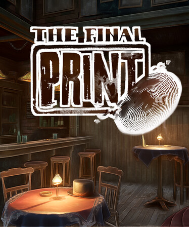
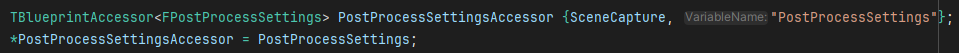
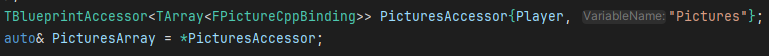
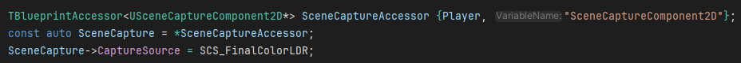
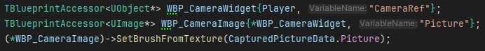
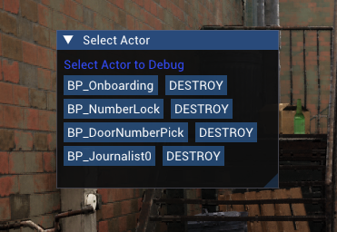
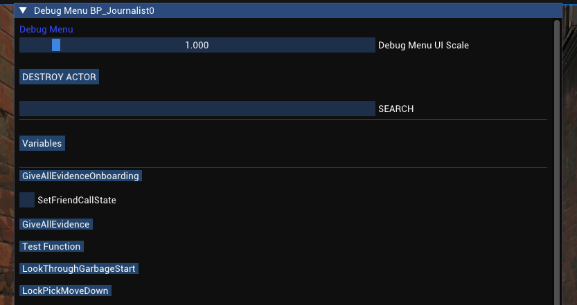
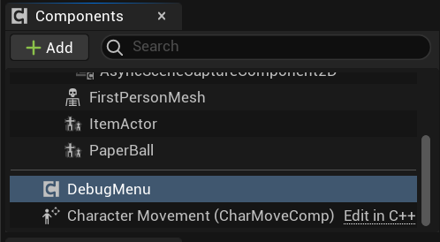
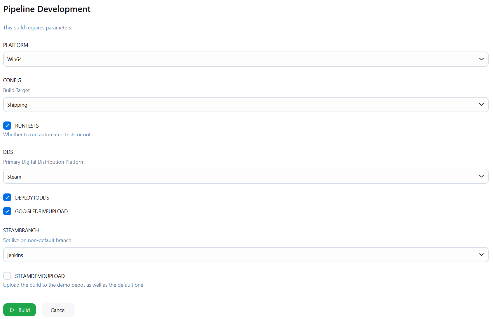

The Final Print
The Final Print is a story-focused adventure game made in Unreal Engine 5 about a journalist solving a murder in Harlem, New York, in the 1940s.
The game was made by me and my team as our Year 3 project at BUAS. I was Lead Programmer, and my main roles in the development process were Project Vision and Engine Tools.
The project mainly consists of blueprints, with some C++, as well as some external tools (like our CI/CD pipeline, made using Jenkins.)

Blueprint Accessor
The first tool I made was the BlueprintAccessor. It is meant to simplify interacting with Blueprints from C++.
It was useful because our game had a lot of Blueprints that needed to be triggered from the more performance critical C++ code.




Debug Menu
In a game with a long story and dialogue options, it's useful to have tools to speed up testing. The Debug Menu does that through features like skipping through dialogue or giving items to the player.
It is implemented using ImGui, and exposes all functions and variables from any actor that the "DebugMenu" component is added on, as long as their type is registered.



Automation
I also worked on parts of automated tooling, like our CI/CD pipeline, using Jenkins. I was responsible for Steam build uploads and Automated Tests using Unreal's Automation system.
